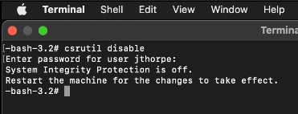

macOS Kernel Debugging
I've done a but of reverse engineering of kernelcache's extracted from .ipsw's recently, and although I'm learning loads about reverse engineering and iOS in general, I felt that something was missing. I was not seeing what actually happens at runtime. There are a few issues when trying to debug the iOS kernel, mainly that its not open source like in macOS, there are projects that try to help overcome this, but I wanted to see what I could do without jumping through hoops first.
Like iOS, macOS uses the XNU operating system, and on the macOS side, this is partially open source, and at the very least supported. So to get up to speed and have a bit of a play, I decided to try debug the macOS kernel.
Installing a VM
I'll be using VirtualBuddy, as UTM does not support booting into recovery mode just yet.
Its a very simple setup. The install wizard downloads the .ipsw and then your given options such as the hostname, to configure your macOS vm. For this example, I'll be installing macOS 12.5.
Disabling SIP
Once the VM is installed, and you've gone through the initial setup, shutdown the VM, and then choose the option to boot into recovery mode.
Once in recovery mode, choose Terminal from the Utilities menu. In this terminal type csrutil disable to disable SIP, you'll be asked for your password.

Now reboot to macOS. We can verify that SIP is disabled with the csrutil status command.
Modifying the boot arguments
We need to change the boot arguments of the VM, this can be done with the nvram boot-args command, we need to specify the debug=0x44 option and also tell the kdp_match_name what interface to listen on, and to disable watchdog. The full command looks something like this;
sudo nvram boot-args="debug=0x44 kdp_match_name=en0 wdt=-1 kcsuffix=development -v"
Now reboot the VM.
Installing the Kernel debug kit
On your host, download the Kernel debug kit from Apple, making sure to download the version that correlates to your macOS build. For my system, I need the 21G72 build.
Installing dependencies and setting up LLDB
On your host, we need to install the following two dependencies.
xcrun pip3 install --user --ignore-installed macholib xcrun pip3 install --user --ignore-installed future
To make life a little easier for you when Kernel debugging, you can set the following option in your ~/.lldbinit file.
echo "settings set target.load-script-from-symbol-file true" >> ~/.lldbinit
Trigger a NMI and debug
Traditionally, to set an NMI on the target would require a key combination of Command, Option, Control, Shift and Esc. As that's a bit of a pain to do in a VM we can use the following dtrace command.
sudo dtrace -w -n "BEGIN { breakpoint(); }"

With the NMI triggered, its now just a matter of connecting to the VM within LLDB. To do this, issue the kdp-remote <ip address> command.
Eventually, you'll hit the breakpoint set in the previous section, and from here you can debug the kernel.
It's important to note that once the kernel has launched and the debugger continued, the kernel cannot be halted again from the debugger.
For this reason, you should make sure that all your breakpoints are registered in the debugger before running continue for the kernel to complete.